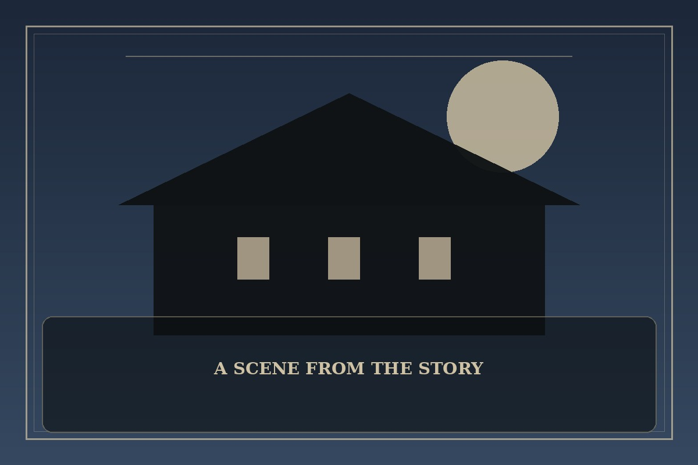

The Breaker
Synopsis
An underestimated student is drawn into a hidden world of martial arts where teachers, rivals, and dangerous traditions collide. Learning to stand up for others proves harder than learning to fight.
Chapter 1: The Lesson After School
The alley behind the gym was empty when Min heard the crash. He found his classmate cornered by older students who mistook fear for permission to keep going.
Min had never won a fight. His instructor had spent weeks teaching him how to fall, breathe, and notice the moment before a strike. Remembering those lessons, he moved the frightened student toward the open street instead of rushing blindly into the group.
The confrontation ended with bruises and a call to the school, not a triumphant knockout. Later, the instructor told Min that martial arts began with control: of distance, of temper, and of the urge to prove something. Min returned to practice the next day, finally understanding the point of the first lesson.

This fan-made sample is an original piece created for a student website project; it is not an official chapter of The Breaker.